Sobre: 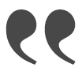
A você que acaba de adentrar a página, muito prazer!
Meu nome é Gabriel, tenho 27 anos e sou um carioca formado em Design de Produto pela UFRJ em 2018. Durante o término da faculdade de design tive a oportunidade de experimentar e conhecer pela primeira vez o mundo da programação, através inicialmente do c++ utilizando o Arduino. Foi naquele momento em que percebi as inúmeras possibilidades que o mundo do desenvolvimento e design de produto digital poderiam trazer para as minhas soluções e para a minha carreira.
Hoje em dia curso Análise e Desenvolvimento de Sistemas na UVA e estou a procura de oportunidades de estágio para conseguir ingressar no mercado de trabalho e ganhar a experiência que procuro.
Atualmente busco me especializar cada vez mais neste universo e convido
você a conhecer aqui um pouco do meu trabalho.
Seja bem-vindo!
UX/UI
Sobre:
Como toda forma de comunicação, tocar um instrumento ou cantar exige do músico prática, estudo e concentração para que este execute corretamente a leitura do que se diz.
As cifras, partituras, tablaturas e acordes são como a escrita em geral e juntamente das letras conduzem a música ao seu tempo. Em geral músicos amadores utilizam os símbolos gráficos dos acordes por mostrarem didaticamente o como executar a nota. As cifras são utilizadas por todos os níveis de instrumentistas, estas são letras que classificam as notas, como: C (dó), D(ré) e E(mi). Porém como são vastas as notas no mundo musical, interpretar todas exige mais dedicação.
Em resumo, este projeto busca trazer mais facilidades e adequação de ferramentas digitais na interação: homem x leitura x instrumento. Diminuindo a evasão e desistência das pessoas a esta prática tão bela.
MINDMAPPING
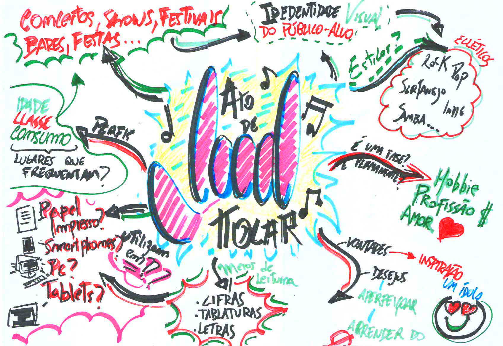painel semântico
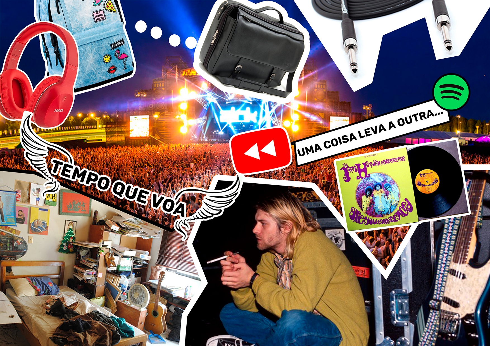Objetivos:
• Qualidade, facilidade e maior variedade dos modos de leitura.
Estudar as formas de escrita e adequá-las ao público de acordo com o nível de conhecimento.
• Tornar mais didático.
Independentemente do nível de proficiência produzir uma fonte didática de leitura, utilizando por exemplo, mecanismos de associação entre as formas de escrita.
• Melhorar a interação Músico x Leitura x Ato de tocar.
Evitar interrupções no ato de tocar devido a dificuldades de leitura e “scrolling”(rolagem) de página e facilitar a visualização do que é mais importante neste momento.
• Produzir uma ferramenta atrativa para o público alvo e seu(s) estilo(s).
Atrair o olhar do público a ser definido como futuro usuário da ferramenta utilizando diversos meios como os gráficos e informativos.
análise
Idade
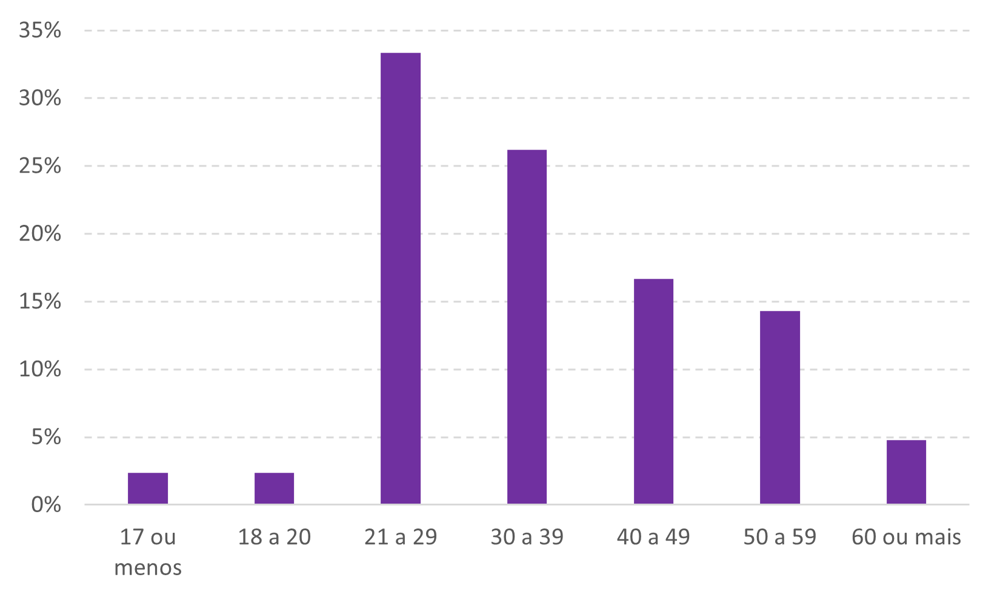Instrumentos
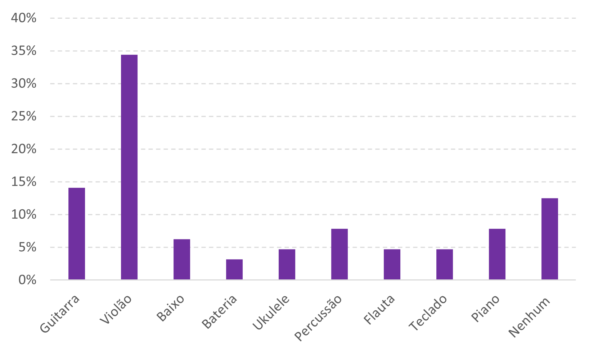Frequência
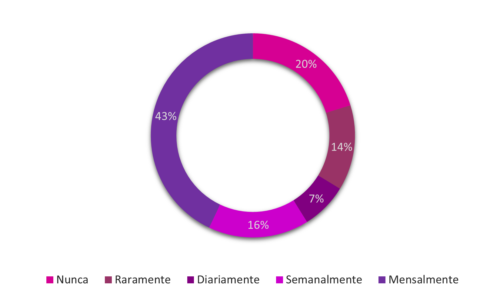Motivação
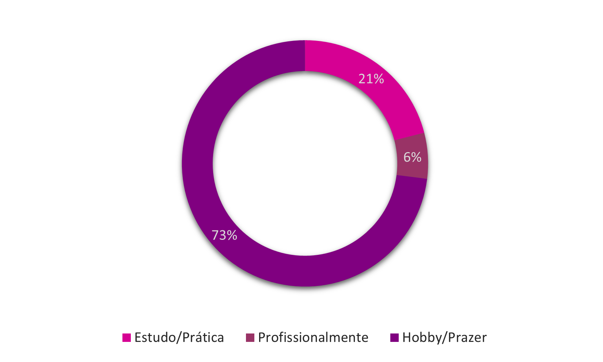Proficiência

Através do que?
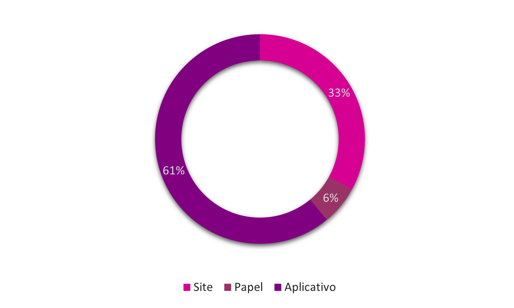O quê?
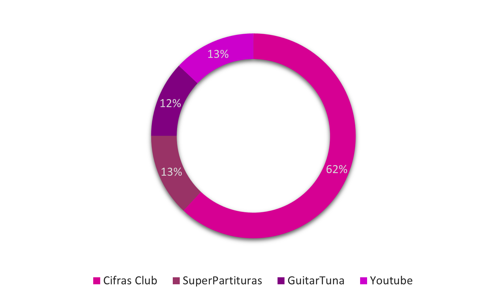Por onde?
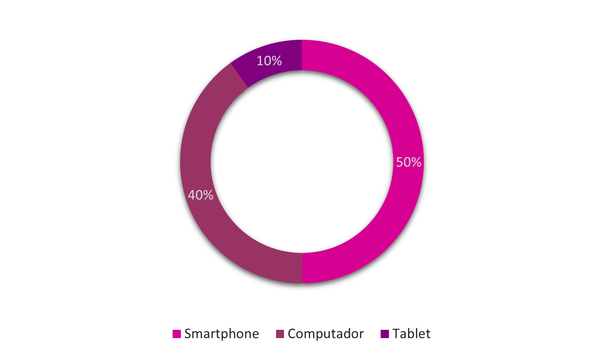Tipo de linguagem mais utilizada?
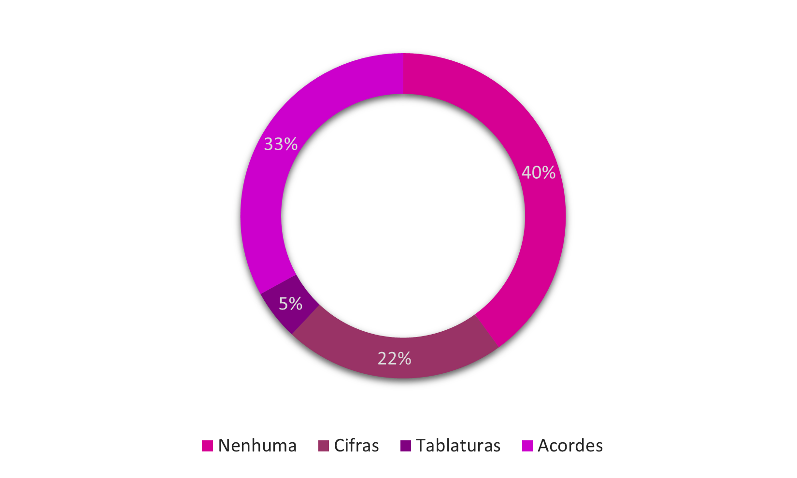Personas e cenários
Luiza, 19 anos. Acaba de ingressar na universidade e tem como uma de suas paixões cantar.
"Utiliza seu smartphone para ouvir as músicas de seus artistas prediletos sempre que pode.
Se tornou um habito ouvir todos os dias dentro do ônibus. Ultimamente está vidrada com o novo álbum da Kate Perry. Ela ama como Kate canta e toca seu violão brilhoso.
Está decidida a aprender em seu quarto a tocar e quem sabe até compor suas próprias canções e compartilha-las com seus amigos nas redes sociais.”
Bruno, 35 anos. Engenheiro de Produção.
“Bruno é casado e tem dois filhos pequenos, trabalha como engenheiro de produção no setor comercial de uma empresa metalúrgica e precisa estar atento ao celular até nos fins de semana.
Bruno costuma ir à igreja aos domingos, mas ultimamente anda muito cansado devido ao trabalho.
Tem como hobby tocar seu teclado, que aprendeu na época de adolescente quando fazia parte da banda de sua igreja.
Aprecia tocar músicas gospels de rock e pop internacional.”
Graça, 52 anos. Recepcionista e cantora de profissional.
“Graça é divorciada, possui 3 filhos e mora com dois deles. Trabalha de segunda a sexta como recepcionista em um consultório dentário no Centro do RJ.
Aos fins de semana adora encontrar seus amigos no bar para beber e conversar.
Amante do samba e da MPB, sempre que aparece uma oportunidade, canta nos bares de seu bairro nas noites de sexta, sábado ou domingo.
Utiliza aplicativos de afinação para os instrumentos da banda, letras para guiar-se e sabe tocar cavaquinho, violão, pandeiro e um pouco de baixo.”
mapa de empatia
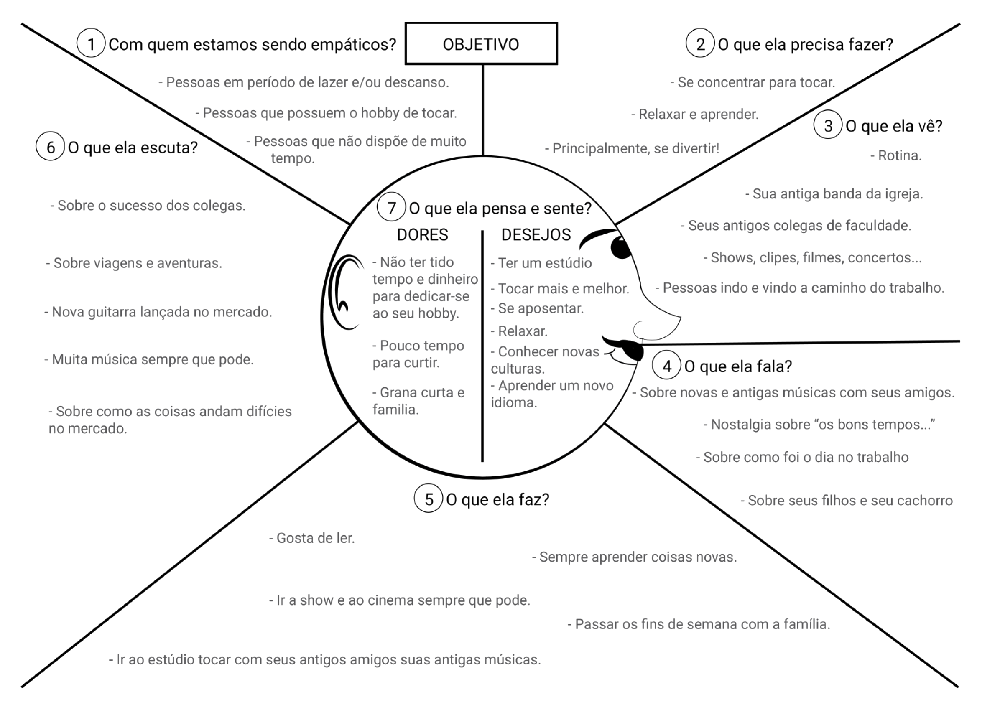wireframes
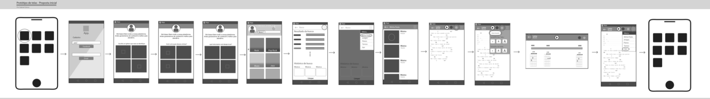Patterns
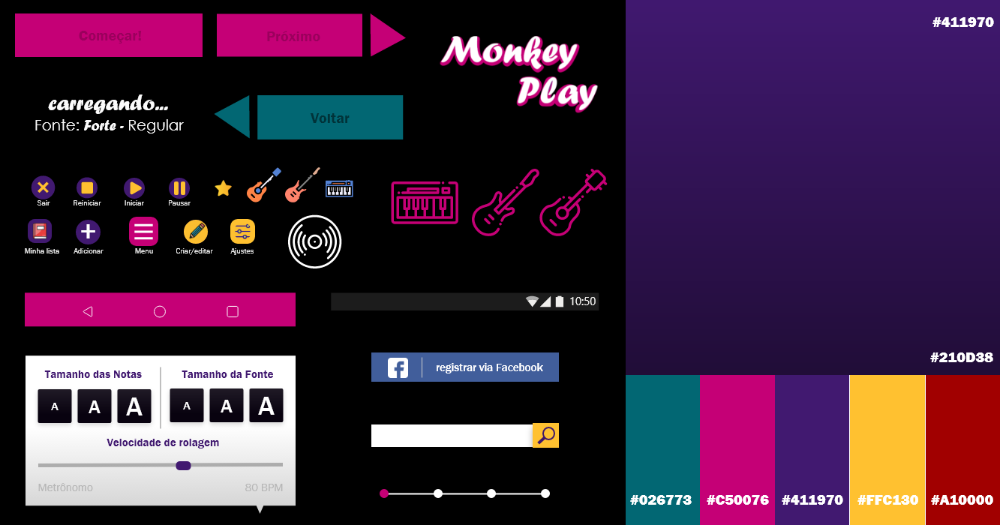Sistema de Avaliação de Colaborador
Case realizado utilizando a plataforma Bubble App.
Trata-se de um Sistema de Avaliação Corporativo que permite aos colaboradores avaliarem uns aos de uma forma leve, podendo ver seu desempenho em uma dashboard simples e também receber feedbacks por meio de tags.
Link de acesso: /avaliar-colaboradores.bubbleapps.io
Dica:
Entre no sistema utilizando o perfil ficitício.
Email: maria.julianelli@cliente.com
Senha: 9876
Front-End
Webpages
Projeto de webpage utilizando o método de mobile first e responsividade para os diversos dispositivos da atualidade.
Através do uso de HTML 5, CSS 3, JavaScript, Jquery e a framework Bootstrap.
Link de acesso: Black Moon Theater
Ferramentas utilizadas:

Industrial
1."Amarelinha"
Luminária feita em metal galvanizado e tubo galvanizado. Possui um mecanismo interno de switch.
2."Kahamida"
Banco em madeira de compensado naval envernizado e entrelaçado em cordas. Ideia de flexibilidade e organicidade, feita totalmente através de encaixes.
3."Kubo"
Luminária de estilo minimalista. Feita em MDF folheado com madeira balsa e cúpula de linho.
Resumo
Formação
Design de Produto - UFRJ
2012-2018.
Análise e Desenvolvimento de Sistemas - UVA
2021-2023.
Trajetória
Bolsista PIBIAC - UFRJ na parte de comunicação da TV Honestino - UFRJ.
Projetista na empresa SUPERPESA Marítima.
Certificados
Curso de formação em Front-End.
Instituto Infnet.
Nível B2 italiano
Design & Ux - Alura
Bootcamp Avanade com .Net.
Digital Inovation One.

Intercâmbio
Design del Prodotto.
Universitá di Bologna, IT.
2014-2015.